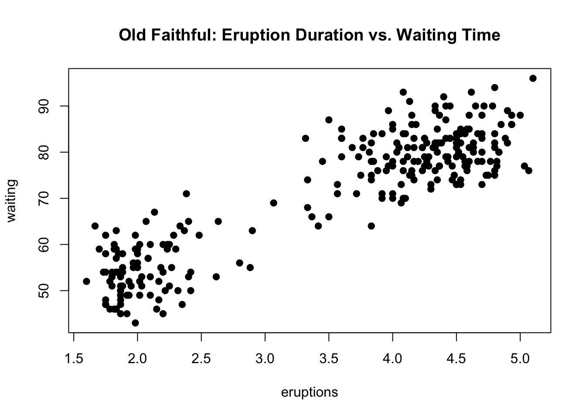
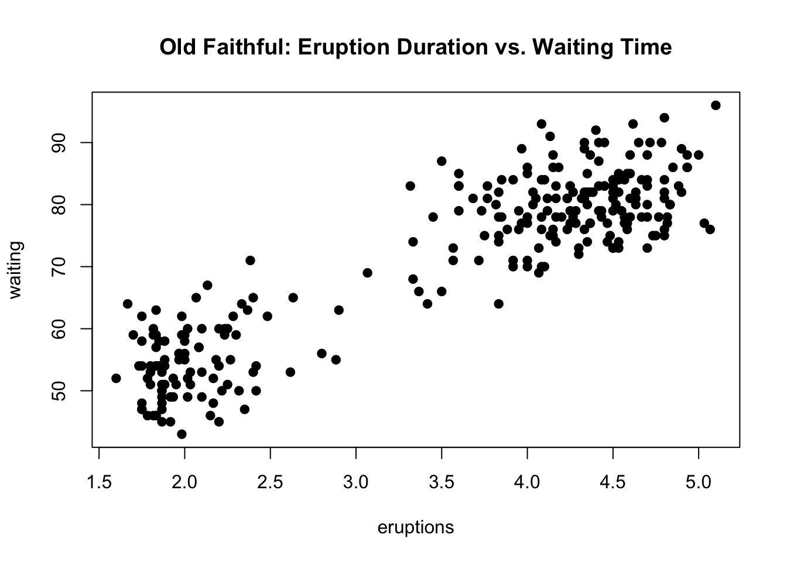
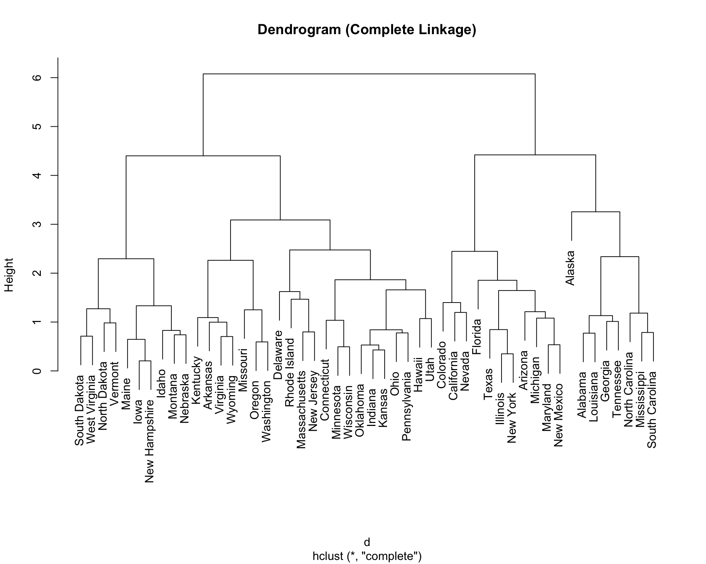
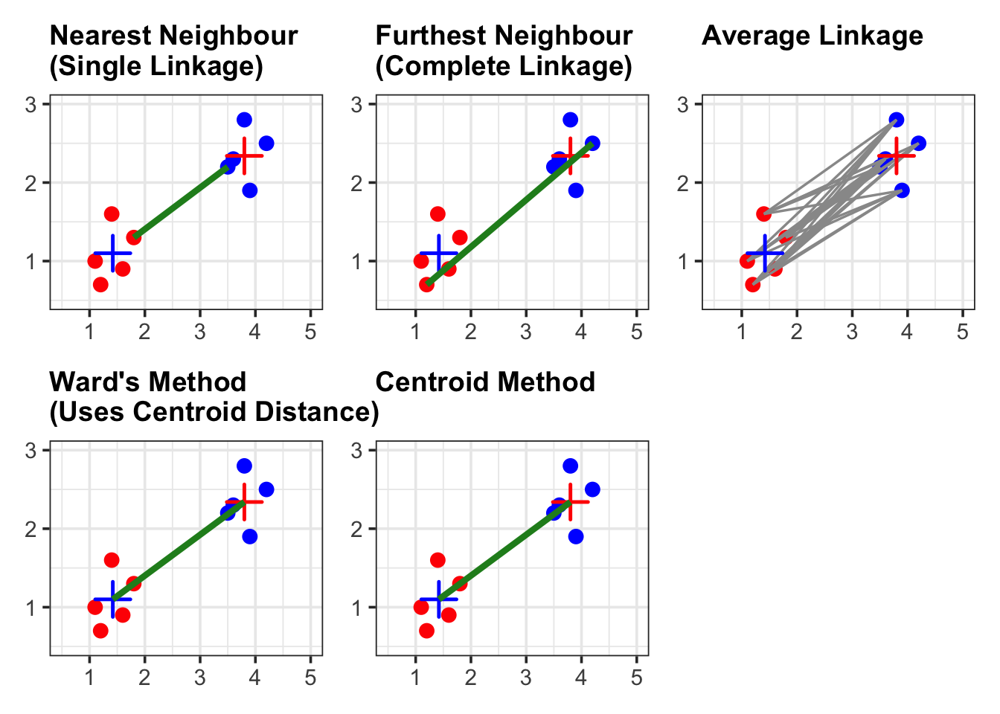

Code
data(faithful)
plot(faithful,
main = "Old Faithful: Eruption Duration vs. Waiting Time",
pch = 19)
By the end of this lecture, you should be able to:
Goal: Discover reasonable groupings (“clusters”) of subjects or units.
Examples:
Cluster analysis is an unsupervised learning method:
data(faithful)
plot(faithful,
main = "Old Faithful: Eruption Duration vs. Waiting Time",
pch = 19)
A crucial factor for generating useful clusters is the initial selection of variables.
Most clustering methods share two core ideas:
A heatmap displays:
# Example: heatmap of a scaled dataset
df <- scale(USArrests)
heatmap(df, col = cm.colors(256))
To determine the number of clusters, cut the dendrogram at a certain height and count the resulting branches.
d <- dist(scale(USArrests))
hc <- hclust(d, method = "complete")
plot(hc, main = "Dendrogram (Complete Linkage)")
Hierarchical clustering methods build a hierarchy of clusters, represented graphically by a Dendrogram[cite: 101].
Linkage determines the dissimilarity d(C_1, C_2) between two clusters, C_1 and C_2.
| Linkage Method | Formula | Description |
|---|---|---|
| Single Linkage (Nearest-Neighbor) | d(C_{1},C_{2})=\min_{i\in C_{1},j\in C_{2}}d_{ij} | Distance between the two closest points in the clusters. |
| Complete Linkage (Furthest-Neighbor) | d(C_{1},C_{2})=\max_{i\in C_{1},j\in C_{2}}d_{ij} | Distance between the two furthest points in the clusters. |
| Average Linkage | d(C_{1},C_{2})=\frac{1}{|C_{1}|\cdot|C_{2}|}\sum_{i\in C_{1},j\in C_{2}}d_{ij} | Average distance between all pairs of points across the clusters. |
| Ward’s Method | \Delta_{SST} = \frac{n_{A}n_{B}}{n_{A}+n_{B}}\bigl\|\overline{X}_{A}-\overline{X}_{B}\bigr\|^2_2 | Merges two clusters that result in the smallest increase in the total within-cluster sum of squared Euclidean distances (SST). |
| Centroid Method | d(\overline{X}_{A},\overline{X}_{B})=\bigl\|\overline{X}_{A}-\overline{X}_{B}\bigr\|^2_2 | Merges the two clusters with the closest centroids (mean vectors). |
library(ggplot2)
library(dplyr)
set.seed(4750)
# -------------------------------------------------------------------
# Data: two clusters
# -------------------------------------------------------------------
red <- data.frame(
x = c(1.1, 1.4, 1.8, 1.2, 1.6),
y = c(1.0, 1.6, 1.3, 0.7, 0.9),
cluster = "red"
)
blue <- data.frame(
x = c(3.5, 3.8, 4.2, 3.9, 3.6),
y = c(2.2, 2.8, 2.5, 1.9, 2.3),
cluster = "blue"
)
df <- bind_rows(red, blue)
# Centroids
centroids <- df %>%
group_by(cluster) %>%
summarize(x = mean(x), y = mean(y), .groups = "drop")
# -------------------------------------------------------------------
# Pairwise distances between red and blue points
# -------------------------------------------------------------------
dist_mat <- as.matrix(dist(df[, 1:2]))
nr <- nrow(red)
nb <- nrow(blue)
# distances only between red and blue rows
cross_dist <- dist_mat[1:nr, (nr + 1):(nr + nb)]
# helper: get coordinates for a (i,j) pair index
get_pair_coords <- function(i, j) {
data.frame(
x1 = red$x[i],
y1 = red$y[i],
x2 = blue$x[j],
y2 = blue$y[j]
)
}
# -------------------------------------------------------------------
# 1) Single linkage: nearest neighbor edge
# -------------------------------------------------------------------
idx_min <- which(cross_dist == min(cross_dist), arr.ind = TRUE)
edge_single <- get_pair_coords(idx_min[1, 1], idx_min[1, 2])
g1 <- ggplot(df, aes(x, y, color = cluster)) +
geom_point(size = 3) +
geom_point(data = centroids,
aes(x, y),
color = c("red", "blue"),
shape = 3, size = 5, stroke = 1.3) +
geom_segment(data = edge_single,
aes(x = x1, y = y1, xend = x2, yend = y2),
color = "forestgreen", linewidth = 1.5) +
scale_color_manual(values = c(red = "red", blue = "blue")) +
coord_cartesian(xlim = c(0.5, 5), ylim = c(0.5, 3)) +
theme_bw(base_size = 14) +
theme(
legend.position = "none",
plot.title = element_text(size = 14, face = "bold"),
axis.title = element_blank()
) +
ggtitle("Nearest Neighbour \n(Single Linkage)")
# -------------------------------------------------------------------
# 2) Complete linkage: furthest neighbor edge
# -------------------------------------------------------------------
idx_max <- which(cross_dist == max(cross_dist), arr.ind = TRUE)
edge_complete <- get_pair_coords(idx_max[1, 1], idx_max[1, 2])
g2 <- ggplot(df, aes(x, y, color = cluster)) +
geom_point(size = 3) +
geom_point(data = centroids,
aes(x, y),
color = c("red", "blue"),
shape = 3, size = 5, stroke = 1.3) +
geom_segment(data = edge_complete,
aes(x = x1, y = y1, xend = x2, yend = y2),
color = "forestgreen", linewidth = 1.5) +
scale_color_manual(values = c(red = "red", blue = "blue")) +
coord_cartesian(xlim = c(0.5, 5), ylim = c(0.5, 3)) +
theme_bw(base_size = 14) +
theme(
legend.position = "none",
plot.title = element_text(size = 14, face = "bold"),
axis.title = element_blank()
) +
ggtitle("Furthest Neighbour \n(Complete Linkage)")
# -------------------------------------------------------------------
# 3) Average linkage: all cross-cluster distances shown
# -------------------------------------------------------------------
# Build all pairwise edges between red and blue
edge_average <- expand.grid(
i = 1:nr,
j = 1:nb
) %>%
mutate(
x1 = red$x[i],
y1 = red$y[i],
x2 = blue$x[j],
y2 = blue$y[j]
)
g3 <- ggplot(df, aes(x, y, color = cluster)) +
geom_point(size = 3) +
# draw all cross-cluster distances as thin grey segments
geom_segment(data = edge_average,
aes(x = x1, y = y1, xend = x2, yend = y2),
inherit.aes = FALSE,
color = "grey60", linewidth = 0.6) +
geom_point(data = centroids,
aes(x, y),
color = c("red", "blue"),
shape = 3, size = 5, stroke = 1.3) +
scale_color_manual(values = c(red = "red", blue = "blue")) +
coord_cartesian(xlim = c(0.5, 5), ylim = c(0.5, 3)) +
theme_bw(base_size = 14) +
theme(
legend.position = "none",
plot.title = element_text(size = 14, face = "bold"),
axis.title = element_blank()
) +
ggtitle("Average Linkage")
# -------------------------------------------------------------------
# 4) Ward's Method: distance between centroids (illustrative)
# (In reality, Ward uses increase in SST; geometrically it's
# based on centroids, so we show the centroid–centroid distance.)
# -------------------------------------------------------------------
red_centroid <- centroids[centroids$cluster == "red", ]
blue_centroid <- centroids[centroids$cluster == "blue", ]
edge_centroid <- data.frame(
x1 = red_centroid$x,
y1 = red_centroid$y,
x2 = blue_centroid$x,
y2 = blue_centroid$y
)
g4 <- ggplot(df, aes(x, y, color = cluster)) +
geom_point(size = 3) +
geom_point(data = centroids,
aes(x, y),
color = c("red", "blue"),
shape = 3, size = 5, stroke = 1.3) +
geom_segment(data = edge_centroid,
aes(x = x1, y = y1, xend = x2, yend = y2),
color = "forestgreen", linewidth = 1.5) +
scale_color_manual(values = c(red = "red", blue = "blue")) +
coord_cartesian(xlim = c(0.5, 5), ylim = c(0.5, 3)) +
theme_bw(base_size = 14) +
theme(
legend.position = "none",
plot.title = element_text(size = 14, face = "bold"),
axis.title = element_blank()
) +
ggtitle("Ward's Method\n(Uses Centroid Distance)")
# -------------------------------------------------------------------
# 5) Centroid Method: distance between centroids
# -------------------------------------------------------------------
g5 <- ggplot(df, aes(x, y, color = cluster)) +
geom_point(size = 3) +
geom_point(data = centroids,
aes(x, y),
color = c("red", "blue"),
shape = 3, size = 5, stroke = 1.3) +
geom_segment(data = edge_centroid,
aes(x = x1, y = y1, xend = x2, yend = y2),
color = "forestgreen", linewidth = 1.5) +
scale_color_manual(values = c(red = "red", blue = "blue")) +
coord_cartesian(xlim = c(0.5, 5), ylim = c(0.5, 3)) +
theme_bw(base_size = 14) +
theme(
legend.position = "none",
plot.title = element_text(size = 14, face = "bold"),
axis.title = element_blank()
) +
ggtitle("Centroid Method")
patchwork::wrap_plots(g1,g2,g3,g4,g5,ncol=3)
The key R function for hierarchical clustering is hclust[cite: 180]. Let’s set up the food clustering data to see how it works.
Food data (n=8 foods, p=5 traits)[cite: 261, 262, 273]:
| Food (Case) | Energy (X1) | Protein (X2) | Fat (X3) | Calcium (X4) | Iron (X5) |
|---|---|---|---|---|---|
| Braised Beef (BB) | 340 | 20 | 28 | 9 | 2.6 |
| Hamburger (HR) | 245 | 21 | 17 | 9 | 2.7 |
| Beef Roast (BR) | 420 | 15 | 39 | 7 | 2.0 |
| Beef Steak (BS) | 375 | 19 | 32 | 9 | 2.6 |
| Canned Beef (BC) | 180 | 21 | 10 | 17 | 3.7 |
| Broiled Chicken (CB) | 115 | 20 | 3 | 8 | 1.4 |
| Canned Chicken (CC) | 170 | 25 | 7 | 12 | 1.5 |
| Beef Heart (BH) | 160 | 26 | 5 | 14 | 5.9 |
The data in the table above is synthesized from sources 291-334 and 263-270.
The first step is to calculate the dissimilarity matrix (e.g., using Euclidean distance). The R function for calculating distance is dist().
# Setup the data matrix (rows are foods, columns are traits)
food_data <- matrix(
c(340, 20, 28, 9, 2.6,
245, 21, 17, 9, 2.7,
420, 15, 39, 7, 2.0,
375, 19, 32, 9, 2.6,
180, 21, 10, 17, 3.7,
115, 20, 3, 8, 1.4,
170, 25, 7, 12, 1.5,
160, 26, 5, 14, 5.9),
ncol = 5, byrow = TRUE,
dimnames = list(c("BB", "HR", "BR", "BS", "BC", "CB", "CC", "BH"),
c("X1_Energy", "X2_Protein", "X3_Fat", "X4_Calcium", "X5_Iron"))
)
# Calculate the distance matrix (Euclidean distance is default)
food_dist <- dist(food_data)
# Print the first few distances
print(round(as.matrix(food_dist)[1:4, 1:4], 1)) BB HR BR BS
BB 0.0 95.6 80.9 35.2
HR 95.6 0.0 176.5 130.9
BR 80.9 176.5 0.0 45.8
BS 35.2 130.9 45.8 0.0